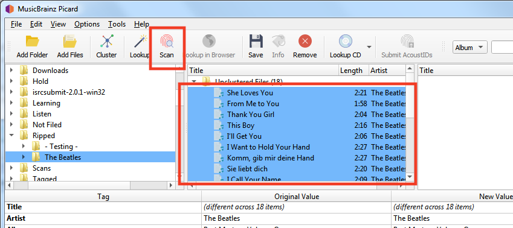
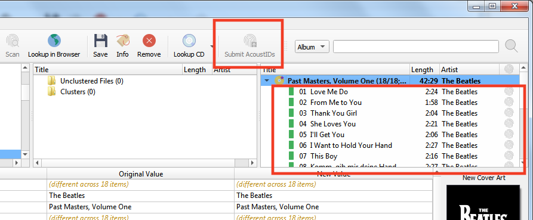
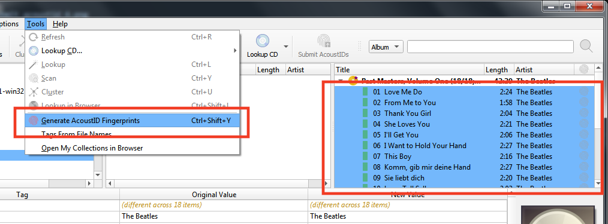
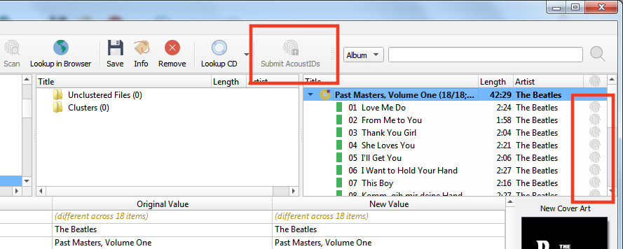

Soumission d’empreintes acoustiques¶
Les empreintes acoustiques sont très utiles pour identifier les pistes et les enregistrements, ce qui permet de les rechercher dans la base de données MusicBrainz. Il est donc très utile de les ajouter lorsque vous étiquetez des fichiers. Notez qu’une empreinte acoustique n’est pas un AcoustID. Veuillez consulter le tutoriel Comprendre Empreintes acoustiques et AcoustIDs pour de plus amples informations.
Note
Lorsque vous utilisez Picard pour soumettre des empreintes acoustiques, il est recommandé d’activer la colonne Empreintes digitales dans la vue du tableau dans le volet de droite. Pour ce faire, cliquez avec le bouton droit de la souris sur l’en-tête de la colonne et cochez la case « État de l’empreinte digitale ». Cela affichera une icône indiquant si l’AcoustID a été calculé et s’il est prêt à être soumis (rouge = non soumis, gris = déjà soumis).
Il existe deux méthodes pour soumettre des empreintes acoustiques, en fonction du flux de travail que vous utilisez pour identifier les publications que vous étiquetez. Notez que les deux méthodes exigent que vous fassiez d’abord correspondre vos fichiers audio aux informations sur les versions et les pistes de la base de données MusicBrainz. Consultez les sections Récupération des informations sur l’album et Mise en correspondance des fichiers aux pistes pour plus d’informations sur la récupération des informations sur les sorties et la correspondance entre les fichiers audio et les sorties.
Les étapes à suivre pour soumettre des empreintes acoustiques pour chacun des deux flux de travail sont les suivantes :
Envoi lors de l’utilisation de Scan pour identifier la version¶
Chargez les fichiers dans le volet de clustering. Sélectionnez les fichiers et cliquez sur le bouton « Scan », ou sélectionnez .
Si les fichiers correspondent à une piste et sont déplacés vers le volet de droite, ils existent déjà dans la base de données AcoustID et n’ont pas besoin d’être soumis à nouveau. Le bouton « Soumettre » restera désactivé.
Si les fichiers ne correspondent pas ou si vous les déplacez manuellement pour qu’ils correspondent à une autre piste, ils pourraient être soumis. L’icône AcoustID pour les pistes apparaîtra en rouge (c’est-à-dire: statut non soumis) et le bouton « Soumettre » sera activé.

Cliquer sur le bouton « Soumettre » ne soumettra que les empreintes digitales des fichiers identifiés à l’étape 3. L’icône AcoustID des pistes deviendra grise (c’est-à-dire: statut soumis) et le bouton « Soumettre » sera désactivé.

{kind=link}
{kind=link}
Soumission lorsque vous n’utilisez pas Scan pour identifier la version¶
Assurez-vous que les fichiers correspondent correctement aux pistes d’une version dans le volet de droite.

Sélectionnez les fichiers dans le volet de droite et sélectionnez . Cela calculera les empreintes acoustiques des fichiers sélectionnés.
Note
Le bouton d’action « Générer des empreintes digitales AcoustID » peut être ajouté à la barre de boutons en modifiant les paramètres dans les options de l’interface utilisateur.
L’icône AcoustID pour les pistes apparaîtra en rouge (c’est-à-dire: statut non soumis) et le bouton « Soumettre » sera activé.

Cliquer sur le bouton « Soumettre » soumettra les empreintes digitales des fichiers. L’icône AcoustID des pistes deviendra grise (ex: état soumis) et le bouton « Soumettre » sera désactivé.

{kind=link}
{kind=link}